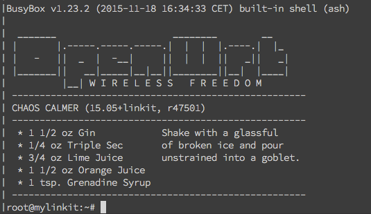

說明書
以下簡稱7688
Intro.
MediaTek LinkItTM is a collection of development platforms designed for the prototyping of Wearable and Internet of Things (IoT) devices. Each development platforms provide a collection of tools, hardware and related resources to —-enable developers to address various Wearable and Internet of Things (IoT) device sectors.
Setup
Prerequsites
- Micro USB cable
Steps
- 將usb接到7688上面用來供電
- 一開始的時候預設是AP mode,所以必須讓你的筆電連到7688這個AP上面
- 打開瀏覽器進入http://mylinkit.local ，然後就會看到7688的網頁版介面
- 設定root密碼（第一次打的時候就是設定了不用確認）
- 建議先到網路設定把它設為work station 模式，確保你的筆電跟7688是在同一個WiFi底下
- 你會發現如果是AP模式的時候，你的電腦是無法上網的，找資料看hackpad的時候滿不方便的
- 這時候可以利用ssh登入
ssh root@mylinkit.local使用一開始設定的密碼就可以登入了！ - 成功你會看到下圖

Example
在/IoT/examples這個目錄底下有三個內建的範例程式，以blink-gpio44.py為例子
1 | import mraa |
- mraa 是一個以 C/C++ 所寫的 Library，用來控制各種硬體協定和介面，因為支援各種語言（如：Python、JavaScript 等），所以我們可以用語言來使用這個函式庫。
- GPIO-44是wifi燈號，所以我們執行這個程式就可以看到wifi燈號在閃爍
- 0:亮
- 1:暗
Notes
- Bootloader:Started by the hardware, responsible for basic initialization, loading and executing the kernel
- Cross-compilation toolchain:Compiler that runs on the development machine, but generates code for the target
- Binutilswhen dealing with binary